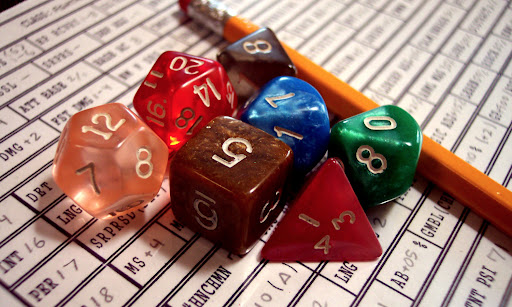
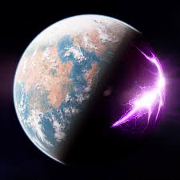
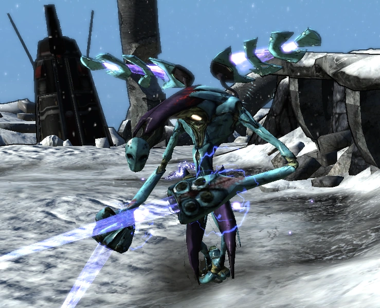

Bem-Vindo a Pandora!
O que é Borderlands?
Borderlands é um videogame de RPG de ação e tiro em primeira pessoa de 2009 desenvolvido pela Gearbox Software e publicado pela 2K. O primeiro jogo foi lançado mundialmente em outubro de 2009 para PlayStation 3, Xbox 360 e Microsoft Windows,com uma versão para Mac OS X sendo lançada em 3 de dezembro de 2010 pela Feral Interactive. E após vender 3 trilhões de cópias, o planejamento de uma continuação era inevitável, mal sabiam que após seu lançameto, a franquia se tornaria um sucesso e criaria muitos fâs, isso levou a minha adaptação do jogo digital para um RPG de mesa, cujo explicarei agora.
| Borderlands 1 | Borderlands 2 | Borderlands Pre-Sequel | Tales of the Borderlands | Borderlands 3 | Tales of the Borderlands 2 | |
|---|---|---|---|---|---|---|
| Data | 20/11/2009 | 18/10/2012 | 14/11/2014 | 25/11/2014 | 13/10/2019 | 21/03/2022 |
| Vendas | 4,5 Milhões | 20 Milhões | Desconhecido | Desconhecido | 18 Milhões | Desconhecido |
| Avaliação | 84/100 | 91/100 | 75/100 | 88/100 | 81/100 | 69/100 |
O Que é um TTRPG
 "RPG é uma sigla em inglês que pode ser traduzida como “Jogo de Interpretação de Papéis” ou “Jogo de Interpretação de Personagens”. Nele um grupo de amigos se reúne para construir uma história, como se fosse um teatro de improviso. Existe um diretor, chamado de “narrador” ou “mestre”, que vai explicando o desenrolar da trama; e existem os jogadores, que modificam a história à medida que interpretam seus personagens. Durante o jogo os personagens vivem aventuras que lembram os grandes épicos de nossa literatura e cinema: enfrentam monstros, salvam princesas, desafiam impérios galácticos... Ou não, pois também é possível interpretar vilões e anti-heróis. Existem RPGs de todos os tipos: de fantasia medieval ao terror, de viagens espaciais a cenários históricos. E isso sem precisar desgrudar da cadeira e largar o refrigerante, pois tudo se passa na imaginação. Existem formas diferentes de jogar RPG e também outros jogos que derivaram dele, mas neste artigo trataremos unicamente do RPG “de mesa”, o mais tradicional, onde os jogadores apenas dizem o que seus personagens farão, interpretando-os por meio de diálogos."
O Universo de Borderlands
 Borderlands se passa em Pandora, um planeta apocalíptico com climas extremos em sua superfície e múltiplas mudanças causadas pelo próprio homem. Pandora se comporta como uma pangeia, onde todos os biomas e formações terrestres estão em constante contato, isso causa efeitos colaterais diversos como as estações que duram cerca de 7 anos, biomas extremos como desertos áridos e gélidos, planícies longas, montanhas com picos que beiram a atmosfera do planeta e organismos únicos que se adaptaram ao próprio planeta, como, por exemplo, os bullymongs que se adaptaram aos desertos e condições extremas desenvolvendo múltiplos braços, força desproporcional em seus quatro braços e uma anatomia relativa a um gorila. O planeta foi o lar do povo nomeado de eridianos, tão misteriosos desde seu aparecimento até seu fim, porém, o que se sabe é que desenvolveram tecnologias e uma sociedade avançada o bastante para que suas estruturas e avanços perdurem ao desafio do tempo.
História
 A milhões de anos, como dito na ambientação, viviam os eridianos, organismos aparentemente biomecanicos que tinham como terra natal o planeta de Pandora, tal indivíduos estão criaram a partir de uma civilização utópica, tecnologias grandes o bastante para que eles se tornassem deuses no próprio universo, tal poder deixou-lhes curiosos o bastante para que experimentassem com qualquer ideia, sejam armas para combate, outros semelhantes para que controlem sobre sua jurisdição, ou até novos organismos vivos com múltiplos propósitos, seja para morte, proteção, armazenamento e etc. Porém, eles ainda tinham um problema, um ser constantemente os aterrorizaram, tanto que teu nome ficou apenas conhecido como destruidor. Para contê-lo, eles utilizaram de uma tecnologia de cofre, essa já utilizada para múltiplas ocasiões, para banir sua face do universo, esforço tão monumental, que após tal feito, seus registros desaparecem, como se nunca e em nenhum momento desejavam ser vistos. Passamos milhões de anos para o futuro e a exploração espacial é a nova era, tal explorações permitiram empresas fazerem uma engenharia reversa na tecnologia eridiana, revelando assim, a existência de cofres no universo. A principal competição é pelo cofre de Pandora, porém, tempos e tempos no inverno de sete anos de Pandora fizeram-nos esquecer que o frio não era o único clima local, e agora com dívidas no planetas, muitas empresas fogem, deixando muitos para trás, desencadeando um sinal que avisava para todos, do mais rico ao mais pobre, que existia um cofre em Pandora, e qualquer que o encontrasse teria tudo, dinheiro, fama, poder e armas. Tal mensagem cria um marco para a nova era dos caçadores.
Sistema
Nessa adaptação, o foco foi posto em simplicidade e quantidade, portanto, em apenas em alguns minutos, qualquer um pode entende-lo e joga-lo em instantes. Todo personagem possui atributos que se referem a diferentes capacidades do indivíduo, cada um deles são um pouco auro-explicativos, os atributos são:
Força - Força é um atributo muito simples. É o quão forte fisicamente seu personagem é. É muito importante para agressores físicos que usam armas corpo a corpo.
Agilidade - Agilidade refere-se a quão bom seu personagem é em mover e controlar seu corpo, seja deslizando a mão no bolso de alguém despercebido ou pular da ponta de um buraco para o outro. É o atributo decisivo de o quão rápido você começa o turno
Inteligência - Inteligência é, simplesmente, conhecimento de livros. Se envolver algo que você aprende sentado em uma biblioteca por um longo período e lendo livros, ele usará Inteligência. Em termos de investigação, isso é especificamente saber detalhes sobre a coisa que você está olhando. Você não terá um teste de inteligência simples com frequência, embora possa surgir em uma situação em que você tenha que resolver um enigma.
Sentido - O Sentido pode se sobrepor à Inteligência, mas o principal fator de delineamento é que o Sentido se refere ao conhecimento prático, algo que é mais provável que você aprenda saindo e fazendo coisas em vez de simplesmente ler sobre elas. Você pode saber muito sobre plantas diferentes, mas isso não o deixa preparado para sobreviver em uma floresta sem suprimentos. O atributo também determina o quão preciso você é enquanto atira ou tenta acertar um inimigo.
Resiliência - Resiliência refere-se à saúde geral e capacidade física, seja HP ou quanto tempo você pode fazer atividades extenuantes sem fazer uma pausa. Uma penalidade por falhar em um teste de Resiliência é frequentemente sofrer um nível de exaustão.
Seu personagem também possui três capacidades que influenciam outras situações:
Velocidade - É influenciado por qual raça você escolhe para ser seu personagem. Determina o quanto você pode andar por cada turno.
Iniciativa - Possui o mesmo valor que sua agilidade e influência na ordem de cada indivíduo nos turnos, ou seja, o quão rápido você pode começar seu movimento.
Precisão - Possui o mesmo valor que seu atributo de sentido e influência sua precisão com armas no geral, seja corpo-a-corpo ou a longa distância.